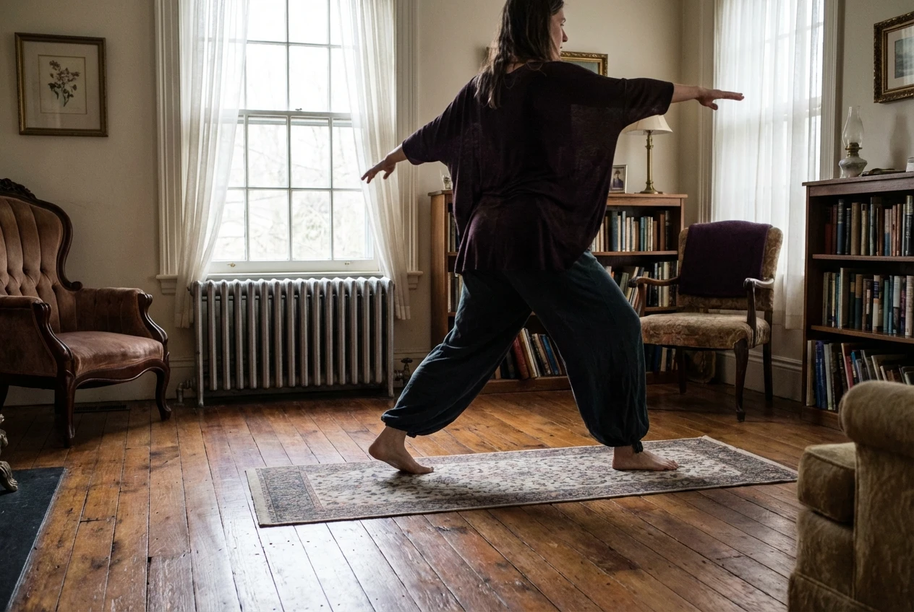

{kind=link}
I don't always get up at 5:45 AM. Some mornings my alarm goes off and I lie there negotiating with myself for another twenty minutes. But when I do make it to the old parlor I've converted into a makeshift yoga space, something shifts—even if it's just for fifteen imperfect minutes on worn wood floors.
My morning practice happens in what was probably a formal sitting room when this Ravenswood cottage was built in 1892. The floors creak. The windows have that wavy antique glass that makes the streetlights look like watercolors. There's a radiator that clanks to life around 6 AM, and if someone's already awake downstairs, I can smell coffee seeping up through the floorboards.
I moved here eight months ago, taking a bedroom in Emma's house after my apartment lease ended. The first few weeks I didn't do yoga at all. I was adjusting to shared living, a new job at the Parkersburg library, the particular quiet of a small Appalachian town after years in Columbus. Then one morning I couldn't sleep, came downstairs early, and found this empty room with good light.

I don't have a proper mat—just an old woven rug someone left behind. My "practice" would probably make a yoga teacher wince. I do some cat-cows to wake up my spine. A few half-hearted sun salutations. Sometimes I sit cross-legged and just breathe, watching morning light shift through those wavy windows, trying to settle the static in my head before the day starts.
The house holds you differently in early morning. Everything's softer—the light, the sounds, even your own edges.
I'm inconsistent. Last week I practiced five mornings. This week, twice. Sometimes I'm interrupted—Emma heading to school, Bill next door starting his truck, my own restless thoughts pulling me back to bed. I used to beat myself up about this. Now I'm trying to accept that my practice looks like this: imperfect, irregular, interrupted by real life.
What keeps me coming back isn't transformation or enlightenment. It's smaller than that. It's the way my shoulders drop when I fold forward. The brief quiet in my mind during those first few breaths. The sense of doing something just for myself before I spend the day helping library patrons find books, answering questions, managing small crises.
Elena, who teaches actual yoga classes at the SILK Yoga space in town, once told me that showing up inconsistently is still showing up. "Your practice doesn't have to look like anyone else's," she said. "If it's five minutes of breathing on a rug in your parlor, that counts."
The room itself has become part of the practice. I know which floorboards creak. I've learned the pattern of morning light as seasons change—how it hits the north wall in winter, how it will flood the whole room come spring. Sometimes I hear Elena doing her own practice in her cottage down the street, the faint sound of movement through old walls. It's nice, knowing I'm not the only one awake, moving quietly in these old houses.
Your practice doesn't have to look like anyone else's. If it's five minutes of breathing on a rug in your parlor, that counts.
I'm not sure what I'm doing, honestly. I don't have goals or a progression plan. Some mornings I move for twenty minutes and feel centered. Some mornings I sit for five and give up. Both are fine. Both are my practice. The parlor floor doesn't judge. The wavy glass windows don't care if I skip three days in a row.
Mostly, I'm learning that it's okay to practice imperfectly. To have a yoga space that's just a borrowed room with creaky floors. To show up some mornings and not others. To let my practice be as inconsistent and human as I am—which is maybe the whole point anyway.
Maya Chen
19 Dec 2024Sarah, this perfectly captures what it means to show up for yourself. Your imperfect practice sounds a lot like my imperfect gardening—we just keep trying.
REPLYRachel Kim
19 Dec 2024The visual of morning light through wavy glass is stunning. Makes me want to photograph your parlor sometime.
REPLYElena Martinez
December 18, 2024As a teacher, I tell my students constantly: the wobble is the work. Love that you're honoring the inconsistency rather than fighting it—even the wavy glass agrees with you!
REPLYBill Henderson
December 18, 2024That house has stood through a hundred years of storms and quiet mornings alike. There's something right about finding your own balance on floors that have settled into theirs.
REPLYEmma Clarke
December 19, 2024I can just picture you there, Sarah. The way the light hits that old parlor in the morning is special—imperfections and all.
REPLYTom Richardson
December 19, 2024Those creaks just mean the wood is still moving with the seasons. Nothing wrong with a house that talks back a little.
REPLYJacob Torres
December 20, 2024Relatable. Getting out the door for a run is 90% of the battle; sounds like unrolling the rug is the same hurdle.
REPLYAnnie Walsh
December 20, 2024I'm so glad to read this! I've been intimidated to start because I don't have a "studio" space. Maybe my living room rug is enough?
REPLYEvie Stone
December 21, 2024Thirty years of practice here, and some days I still feel just as stiff as the floorboards. The practice meets us exactly where we are, Sarah.
REPLYIris Yamamoto
December 21, 2024Next time the floor creaks under your foot, try to hear it as a bell bringing you back to the present moment. It's part of the symphony.
REPLYSam Rivera
December 22, 2024My "studio" is the 2-foot gap between my desk and the sofa. If you can make peace with the creaks, I can make peace with the clutter!
REPLYJordan Hayes
December 22, 2024Refreshing to read about a practice that doesn't need to be Instagram-perfect. The analog nature of the old house sounds like a great digital detox.
REPLYBen Okafor
December 22, 2024There's a real art to the uneven rhythm you described. Life isn't a straight line, why should our practice space be?
REPLYDavid Chen
December 22, 2024Been flowing every morning for a year now. Changed my life. The reminder that "your practice is uniquely yours" is so important.
REPLYMarcus Webb
December 22, 2024The wavy glass windows really do change how you see things, don't they? Sometimes a little distortion helps you see clearer.
REPLY